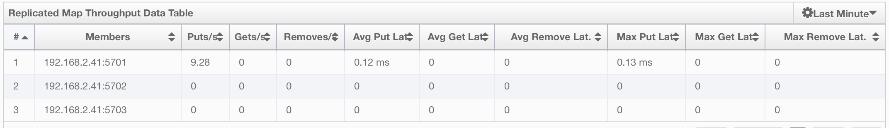

Management Center
Hazelcast Management Center enables you to monitor and manage your nodes running Hazelcast. In addition to monitoring overall state of your clusters, you can also analyze and browse your data structures in detail, update map configurations and take thread dump from nodes. With its scripting and console module, you can run scripts (JavaScript, Groovy, etc.) and commands on your nodes.
Installation
You have two options for installing Hazelcast Management Center. You can either deploy the mancenter-version.war application into your Java application server/container or you can start Hazelcast Management Center from the command line and then have the Hazelcast nodes communicate with that web application. This means that your Hazelcast nodes should know the URL of the mancenter application before they start.
Here are the steps:
- Download the latest Hazelcast ZIP from hazelcast.org. The ZIP contains the
mancenter-version.warfile. - You can directly start
mancenter-version.warfile from the command line. The following command will start Hazelcast Management Center on port 8080 with context root 'mancenter' (http://localhost:8080/mancenter).
java -jar mancenter-*version*.war 8080 mancenter
- Or, you can deploy it to your web server (Tomcat, Jetty, etc.). Let us say it is running at
http://localhost:8080/mancenter. - After you perform the above steps, make sure that
http://localhost:8080/mancenteris up. - Configure your Hazelcast nodes by adding the URL of your web application to your
hazelcast.xml. Hazelcast nodes will send their states to this URL.
<management-center enabled="true">
http://localhost:8080/mancenter
</management-center>
- Start your Hazelcast cluster.
- Browse to
http://localhost:8080/mancenterand login. Initial login username/password isadmin/admin
The Management Center creates a folder with the name "mancenter" under your "user/home" folder to save data files. You can change the data folder by setting the hazelcast.mancenter.home system property.
RELATED INFORMATION
Please refer to the Management Center Configuration section for a full description of Hazelcast Management Center configuration.
Tool Overview
Once the page is loaded after selecting a cluster, the tool's home page appears as shown below.

This page provides the fundamental properties of the selected cluster which are explained in the Home Page section. The page has a toolbar on the top and a menu on the left.
Toolbar
The toolbar has the following buttons:
- Home: Loads the home page shown above. Please see the Home Page section.
- Scripting: Loads the page used to write and execute user`s own scripts on the cluster. Please see the Scripting section.
- Console: Loads the page used to execute commands on the cluster. Please see the Console section.
- Alerts: Creates alerts by specifying filters. Please see the Alerts section.
- Documentation: Opens the Management Center documentation in a window inside the tool. Please see the Documentation section.
- Administration: Used by the admin users to manage users in the system. Please see the Administration section.
- Time Travel: Sees the cluster's situation at a time in the past. Please see the Time Travel section.
Cluster Selector: Switches between clusters. When the mouse is moved onto this item, a drop down list of clusters appears.

The user can select any cluster and once selected, the page immediately loads with the selected cluster's information.
- Logout: Closes the current user's session.
 NOTE: Some of the above listed toolbar items are not visible to users who are not admin or who have read-only permission. Also, some of the operations explained in the later sections cannot be performed by users with read-only permission. Please see the Administration section for details.
NOTE: Some of the above listed toolbar items are not visible to users who are not admin or who have read-only permission. Also, some of the operations explained in the later sections cannot be performed by users with read-only permission. Please see the Administration section for details.
Menu
The Home page includes a menu on the left which lists the distributed data structures in the cluster and all the cluster members (nodes), as shown below.

NOTE: Distributed data structures will be shown there when the proxies are created for them.
You can expand and collapse menu items by clicking on them. Below is the list of menu items with links to their explanations.
Tabbed View
Each time you select an item from the toolbar or menu, the item is added to the main view as a tab, as shown below.

In the above example, Home, Scripting, Console, queue1 and map1 windows can be seen as tabs. Windows can be closed using the  icon on each tab (except the Home Page; it cannot be closed).
icon on each tab (except the Home Page; it cannot be closed).
Home Page
This is the first page appearing after logging in. It gives an overview of the connected cluster. The following subsections describe each portion of the page.
CPU Utilization
This part of the page provides load and utilization information for the CPUs for each node, as shown below.

The first column lists the nodes with their IPs and ports. The next columns list the loads on each CPU for the last 1, 5 and 15 minutes. The last column (Chart) graphically shows the utilization of CPUs. When you move the mouse cursor on a desired graph, you can see the CPU utilization at the time where the cursor is placed. Graphs under this column shows the CPU utilizations approximately for the last 2 minutes.
Memory Utilization
This part of the page provides information related to memory usages for each node, as shown below.

The first column lists the nodes with their IPs and ports. The next columns show the used and free memories out of the total memory reserved for Hazelcast usage, in real-time. The Max column lists the maximum memory capacity of each node and the Percent column lists the percentage value of used memory out of the maximum memory. The last column (Chart) shows the memory usage of nodes graphically. When you move the mouse cursor on a desired graph, you can see the memory usage at the time where the cursor is placed. Graphs under this column shows the memory usages approximately for the last 2 minutes.
Memory Distribution
This part of the page graphically provides the cluster wise breakdown of memory, as shown below. The blue area is the memory used by maps, the dark yellow area is the memory used by non-Hazelcast entities, and the green area is the free memory out of the whole cluster`s memory capacity.

In the above example, you can see 0.32% of the total memory is used by Hazelcast maps (it can be seen by placing the mouse cursor on it), 58.75% is used by non-Hazelcast entities and 40.85% of the total memory is free.
Map Memory Distribution
This part is the breakdown of the blue area shown in the Memory Distribution graph explained above. It provides the percentage values of the memories used by each map, out of the total cluster memory reserved for all Hazelcast maps.

In the above example, you can see 49.55% of the total map memory is used by map1 and 49.55% is used by map2.
Partition Distribution
This pie chart shows what percentage of partitions each node has, as shown below.

You can see each node's partition percentages by placing the mouse cursor on the chart. In the above example, you can see the node "127.0.0.1:5708" has 5.64% of the total partition count (which is 271 by default and configurable, please see the hazelcast.partition.count property explained in the System Properties section).
Caches
You can monitor your caches' metrics by clicking the cache name listed on the left panel under Caches menu item. A new tab for monitoring that cache instance is opened on the right, as shown below.

On top of the page, four charts monitor the Gets, Puts, Removals and Evictions in real-time. The X-axis of all the charts show the current system time. To open a chart as a separate dialog, click on the  button placed at the top right of each chart.
button placed at the top right of each chart.
Under these charts is the Cache Statistics Data Table. From left to right, this table lists the IP addresses and ports of each node, get, put, removal, eviction, hit and miss count per second in real-time.
You can navigate through the pages using the buttons at the bottom right of the table (First, Previous, Next, Last). You can ascend or descend the order of the listings in each column by clicking on column headings.
NOTE: You need to enable the statistics for caches to monitor them in the Management Center. Use the <statistics-enabled> element or setStatisticsEnabled() method in declarative or programmatic configuration, respectively, to enable the statistics. Please refer to the [Cache Configuration section] for more information.
Maps
Map instances are listed under the Maps menu item on the left. When you click on a map, a new tab for monitoring that map instance opens on the right, as shown below. In this tab, you can monitor metrics and also re-configure the selected map.

The below subsections explain the portions of this window.
Map Browser
Map Browser is a tool you can use to retrieve properties of the entries stored in the selected map. To open it, click on the Map Browser button, located at the top right of the window. Once opened, the tool appears as a dialog, as shown below.

Once the key and key's type is specified and the Browse button is clicked, the key's properties along with its value are listed.
Map Config
By using the Map Config tool, you can set selected map's attributes like the backup count, TTL, and eviction policy. To open it, click on the Map Config button, located at the top right of the window. Once opened, the tool appears as a dialog, as shown below.

Change any attribute as required and click the Update button to save changes.
Map Monitoring
Besides Map Browser and Map Config tools, this page has monitoring options explained below. All of these options perform real-time monitoring.
On top of the page, small charts monitor the size, throughput, memory usage, backup size, etc. of the selected map in real-time. The X-axis of all the charts show the current system time. You can select other small monitoring charts using the  button at the top right of each chart. When you click the button, the monitoring options are listed, as shown below.
button at the top right of each chart. When you click the button, the monitoring options are listed, as shown below.

When you click on a desired monitoring, the chart is loaded with the selected option. To open a chart as a separate dialog, click on the button placed at the top right of each chart. The monitoring charts below are available:
- Size: Monitors the size of the map. Y-axis is the entry count (should be multiplied by 1000).
- Throughput: Monitors get, put and remove operations performed on the map. Y-axis is the operation count.
- Memory: Monitors the memory usage on the map. Y-axis is the memory count.
- Backups: Chart loaded when "Backup Size" is selected. Monitors the size of the backups in the map. Y-axis is the backup entry count (should be multiplied by 1000).
- Backup Memory: Chart loaded when "Backup Mem." is selected. Monitors the memory usage of the backups. Y-axis is the memory count.
- Hits: Monitors the hit count of the map.
- Puts/s, Gets/s, Removes/s: These three charts monitor the put, get and remove operations (per second) performed on the selected map.
Under these charts are Map Memory and Map Throughput data tables. The Map Memory data table provides memory metrics distributed over nodes, as shown below.

From left to right, this table lists the IP address and port, entry counts, memory used by entries, backup entry counts, memory used by backup entries, events, hits, locks and dirty entries (in the cases where MapStore is enabled, these are the entries that are put to/removed from the map but not written to/removed from a database yet) of each node in the map. You can navigate through the pages using the buttons at the bottom right of the table (First, Previous, Next, Last). You can ascend or descend the order of the listings by clicking on the column headings.
Map Throughput data table provides information about the operations (get, put, remove) performed on each node in the map, as shown below.

From left to right, this table lists the IP address and port of each node, the put, get and remove operations on each node, the average put, get, remove latencies, and the maximum put, get, remove latencies on each node.
You can select the period in the combo box placed at the top right corner of the window, for which the table data will be shown. Available values are Since Beginning, Last Minute, Last 10 Minutes and Last 1 Hour.
You can navigate through the pages using the buttons placed at the bottom right of the table (First, Previous, Next, Last). To ascend or descent the order of the listings, click on the column headings.
Replicated Maps
Replicated Map instances are shown under the Replicated Maps menu item on the left. When you click on a Replicated Map, a new tab for monitoring that instance opens on the right, as shown below.

In this tab, you can monitor metrics and also re-configure the selected Replicated Map. All of the statistics are real-time monitoring statistics.
When you click on a desired monitoring, the chart is loaded with the selected option. Also you can open the chart in new window.
- Size: Monitors the size of the Replicated Map. Y-axis is the entry count (should be multiplied by 1000).
- Throughput: Monitors get, put and remove operations performed on the Replicated Map. Y-axis is the operation count.
- Memory: Monitors the memory usage on the Replicated Map. Y-axis is the memory count.
- Hits: Monitors the hit count of the Replicated Map.
- Puts/s, Gets/s, Removes/s: These three charts monitor the put, get and remove operations (per second) performed on the selected Replicated Map, the average put, get, remove latencies, and the maximum put, get, remove latencies on each node.
Replicated Map Throughput Data Table provides information about operations (get,put,remove) performed on each node in the selected Replicated Map.

From left to right, this table lists the IP address and port of each node, the put, get and remove operations on each node, the average put, get, remove latencies, and the maximum put, get, remove latencies on each node.
You can select the period in the combo box placed at the top right corner of the window, for which the table data will be shown. Available values are Since Beginning, Last Minute, Last 10 Minutes and Last 1 Hour.
You can navigate through the pages using the buttons placed at the bottom right of the table (First, Previous, Next, Last). To ascend or descent the order of the listings, click on the column headings.
Queues
Using the menu item Queues, you can monitor your queues data structure. When you expand this menu item and click on a queue, a new tab for monitoring that queue instance is opened on the right, as shown below.

On top of the page, small charts monitor the size, offers and polls of the selected queue in real-time. The X-axis of all the charts shows the current system time. To open a chart as a separate dialog, click on the button placed at the top right of each chart. The monitoring charts below are available:
- Size: Monitors the size of the queue. Y-axis is the entry count (should be multiplied by 1000).
- Offers: Monitors the offers sent to the selected queue. Y-axis is the offer count.
- Polls: Monitors the polls sent to the selected queue. Y-axis is the poll count.
Under these charts are Queue Statistics and Queue Operation Statistics tables. The Queue Statistics table provides item and backup item counts in the queue and age statistics of items and backup items at each node, as shown below.

From left to right, this table lists the IP address and port, items and backup items on the queue of each node, and maximum, minimum and average age of items in the queue. You can navigate through the pages using the buttons placed at the bottom right of the table (First, Previous, Next, Last). The order of the listings in each column can be ascended or descended by clicking on column headings.
Queue Operations Statistics table provides information about the operations (offers, polls, events) performed on the queues, as shown below.

From left to right, this table lists the IP address and port of each node, and counts of offers, rejected offers, polls, poll misses and events.
You can select the period in the combo box placed at the top right corner of the window to show the table data. Available values are Since Beginning, Last Minute, Last 10 Minutes and Last 1 Hour.
You can navigate through the pages using the buttons placed at the bottom right of the table (First, Previous, Next, Last). Click on the column headings to ascend or descend the order of the listings.
Topics
To monitor your topics' metrics, click the topic name listed on the left panel under the Topics menu item. A new tab for monitoring that topic instance opens on the right, as shown below.

On top of the page, two charts monitor the Publishes and Receives in real-time. They show the published and received message counts of the cluster, nodes of which are subscribed to the selected topic. The X-axis of both charts show the current system time. To open a chart as a separate dialog, click on the button placed at the top right of each chart.
Under these charts is the Topic Operation Statistics table. From left to right, this table lists the IP addresses and ports of each node, and counts of message published and receives per second in real-time. You can select the period in the combo box placed at top right corner of the table to show the table data. The available values are Since Beginning, Last Minute, Last 10 Minutes and Last 1 Hour.
You can navigate through the pages using the buttons placed at the bottom right of the table (First, Previous, Next, Last). Click on the column heading to ascend or descend the order of the listings.
MultiMaps
MultiMap is a specialized map where you can associate a key with multiple values. This monitoring option is similar to the Maps option: the same monitoring charts and data tables monitor MultiMaps. The differences are that you cannot browse the MultiMaps and re-configure it. Please see the Maps section.
Executors
Executor instances are listed under the Executors menu item on the left. When you click on a executor, a new tab for monitoring that executor instance opens on the right, as shown below.

On top of the page, small charts monitor the pending, started, completed, etc. executors in real-time. The X-axis of all the charts shows the current system time. You can select other small monitoring charts using the button placed at the top right of each chart. When it is clicked, the monitoring options are listed, as shown below.

When you click on a desired monitoring, the chart loads with the selected option. To open a chart as a separate dialog, click on the button placed at top right of each chart. The below monitoring charts are available:
- Pending: Monitors the pending executors. Y-axis is the executor count.
- Started: Monitors the started executors. Y-axis is the executor count.
- Start Lat. (msec): Shows the latency when executors are started. Y-axis is the duration in milliseconds.
- Completed: Monitors the completed executors. Y-axis is the executor count.
- Comp. Time (msec): Shows the completion period of executors. Y-axis is the duration in milliseconds.
Under these charts is the Executor Operation Statistics table, as shown below.

From left to right, this table lists the IP address and port of nodes, the counts of pending, started and completed executors per second, and the execution time and average start latency of executors on each node. You can navigate through the pages using the buttons placed at the bottom right of the table (First, Previous, Next, Last). Click on the column heading to ascend or descend the order of the listings.
Members
Use this menu item to monitor each cluster member (node) and perform operations like running garbage collection (GC) and taking a thread dump. Once you select a member from the menu, a new tab for monitoring that member opens on the right, as shown below.

The CPU Utilization chart shows the percentage of CPU usage on the selected member. The Memory Utilization chart shows the memory usage on the selected member with three different metrics (maximum, used and total memory). You can open both of these charts as separate windows using the button placed at top right of each chart; this gives you a clearer view of the chart.
The window titled Partitions shows which partitions are assigned to the selected member. Runtime is a dynamically updated window tab showing the processor number, the start and up times, and the maximum, total and free memory sizes of the selected member. Next to this, the Properties tab shows the system properties. The Member Configuration window shows the connected Hazelcast cluster's XML configuration.
The List of Slow Operations gives an overview of detected slow operations which occurred on that member. The data is collected by the SlowOperationDetector.

By clicking on an entry you can open a dialog which shows the stacktrace and detailed information about each slow invocation of this operation.

Besides the aforementioned monitoring charts and windows, you can also perform operations on the selected member through this page. The operation buttons are located at the top right of the page, as explained below:
- Run GC: When pressed, garbage collection is executed on the selected member. A notification stating that the GC execution was successful will be shown.
- Thread Dump: When pressed, thread dump of the selected member is taken and shown as a separate dialog to the user.
- Shutdown Node: It is used to shutdown the selected member.
Scripting
You can use the scripting feature of this tool to execute codes on the cluster. To open this feature as a tab, select Scripting located at the toolbar on top. Once selected, the scripting feature opens as shown below.

In this window, the Scripting part is the actual coding editor. You can select the members on which the code will execute from the Members list shown at the right side of the window. Below the members list, a combo box enables you to select a scripting language: currently, JavaScript, Ruby, Groovy and Python languages are supported. After you write your script and press the Execute button, you can see the execution result in the Result part of the window.
NOTE: To use the scripting languages other than JavaScript on a member, the libraries for those languages should be placed in the classpath of that member.
There are Save and Delete buttons on the top right of the scripting editor. To save your scripts, press the Save button after you type a name for your script into the field next to this button. The scripts you saved are listed in the Saved Scripts part of the window, located at the bottom right of the page. Click on a saved script from this list to execute or edit it. If you want to remove a script that you wrote and saved before, select it from this list and press the Delete button.
In the scripting engine you have a HazelcastInstance bonded to a variable named hazelcast. You can invoke any method that HazelcastInstance has via the hazelcast variable. You can see example usage for JavaScript below.
var name = hazelcast.getName();
var node = hazelcast.getCluster().getLocalMember();
var employees = hazelcast.getMap("employees");
employees.put("1","John Doe");
employees.get("1"); // will return "John Doe"
Console
The Management Center has a console feature that enables you to execute commands on the cluster. For example, you can perform puts and gets on a map, after you set the namespace with the command ns <name of your map>. The same is valid for queues, topics, etc. To execute your command, type it into the field below the console and press Enter. Type help to see all the commands that you can use.
Open a console window by clicking on the Console button located on the toolbar. Below is a sample view with some executed commands.

Alerts
You can use the alerts feature of this tool to receive alerts by creating filters. In these filters, you can specify criteria for cluster, nodes or data structures. When the specified criteria are met for a filter, the related alert is shown as a pop-up message on the top right of the page.
Once you click the Alerts button located on the toolbar, the page shown below appears.

Creating Filters for Cluster
Select the Cluster Alerts check box to create a cluster wise filter. Once selected, the next screen asks for the items for which alerts will be created, as shown below.

Select the desired items and click the Next button. On the next page (shown below), specify the frequency of checks in hour and min fields, give a name for the filter, select whether notification e-mails will be sent (to no one, only admin or to all users) and select whether the alert data will be written to the disk (if checked, you can see the alert log at the folder /users/

Click on the Save button; your filter will be saved and put into the Filters part of the page, as shown below.

To edit the filter, click on the  icon. To delete the filter, click on the
icon. To delete the filter, click on the  icon.
icon.
Creating Filters for Cluster Members
Select Member Alerts check box to create filters for some or all members in the cluster. Once selected, the next screen asks for which members the alert will be created. Select the desired members and click on the Next button. On the next page (shown below), specify the criteria.

Alerts can be created when:
- free memory on the selected nodes is less than the specified number.
- used heap memory is larger than the specified number.
- the number of active threads are less than the specified count.
- the number of daemon threads are larger than the specified count.
When two or more criteria is specified they will be bound with the logical operator AND.
On the next page, give a name for the filter, select whether notification e-mails will be sent (to no one, only admin, or to all users) and select whether the alert data will be written to the disk (if checked, you can see the alert log at the folder /users/
Click on the Save button; your filter will be saved and put into the Filters part of the page. To edit the filter, click on the icon. To delete it, click on the icon.
Creating Filters for Data Types
Select the Data Type Alerts check box to create filters for data structures. The next screen asks for which data structure (maps, queues, multimaps, executors) the alert will be created. Once a structure is selected, the next screen immediately loads and you then select the data structure instances (i.e. if you selected Maps, it will list all the maps defined in the cluster, you can select one map or more). Select as desired, click on the Next button, and select the members on which the selected data structure instances will run.
The next screen, as shown below, is the one where you specify the criteria for the selected data structure.

As the screen shown above shows, you will select an item from the left combo box, select the operator in the middle one, specify a value in the input field, and click on the Add button. You can create more than one criteria in this page; those will be bound by the logical operator AND.
After you specify the criteria and click the Next button, give a name for the filter, select whether notification e-mails will be sent (to no one, only admin or to all users) and select whether the alert data will be written to the disk (if checked, you can see the alert log at the folder /users/
Click on the Save button; your filter will be saved and put into the Filters part of the page. To edit the filter, click on the icon. To delete it, click on the icon.
Administration
NOTE: This toolbar item is available only to admin users, i.e. the users who initially have **admin** as their both usernames and passwords.
The Admin user can add, edit, and remove users and specify the permissions for the users of Management Center. To perform these operations, click on the Administration button located on the toolbar. The page below appears.

To add a user to the system, specify the username, e-mail and password in the Add/Edit User part of the page. If the user to be added will have administrator privileges, select isAdmin checkbox. Permissions checkboxes have two values:
- Read Only: If this permission is given to the user, only Home, Documentation and Time Travel items will be visible at the toolbar at that user's session. Also, users with this permission cannot update a map configuration, run a garbage collection and take a thread dump on a node, or shutdown a node (please see the Members section).
- Read/Write: If this permission is given to the user, Home, Scripting, Console, Documentation and Time Travel items will be visible. The users with this permission can update a map configuration and perform operations on the nodes.
After you enter/select all fields, click Save button to create the user. You will see the newly created user's username on the left side, in the Users part of the page.
To edit or delete a user, select a username listed in the Users. Selected user information appears on the right side of the page. To update the user information, change the fields as desired and click the Save button. To delete the user from the system, click the Delete button.
Time Travel
Time Travel is used to check the status of the cluster at a time in the past. When this item is selected on the toolbar, a small window appears on top of the page, as shown below.

To see the cluster status in a past time, Time Travel should be enabled first. Click on the area where it says OFF (on the right of Time Travel window). It will turn to ON after it asks whether to enable the Time Travel with a dialog: click on Enable in the dialog to enable Time Travel.
Once it is ON, the status of your cluster will be stored on your disk as long as your web server is alive.
You can go back in time using the slider and/or calendar and check your cluster's situation at the selected time. All data structures and members can be monitored as if you are using the management center normally (charts and data tables for each data structure and members). Using the arrow buttons placed at both sides of the slider, you can go back or further with steps of 5 seconds. It will show status if Time Travel has been ON at the selected time in past; otherwise, all the charts and tables will be shown as empty.
The historical data collected with Time Travel feature are stored in a file database on the disk. These files can be found in the folder <User's Home Directory>/mancenter<Hazelcast version>, e.g. /home/mancenter3.5. This folder can be changed using the hazelcast.mancenter.home property on the server where Management Center is running.
Time travel data files are created monthly. Their file name format is [group-name]-[year][month].db and
[group-name]-[year][month].lg. Time travel data is kept in the *.db files. The files with the extension lg are temporary files created internally and you do not have to worry about them.
Management Center has no automatic way of removing or archiving old time travel data files. They remain in the aforementioned folder until you delete or archive them.
Documentation
To see the documentation, click on the Documentation button located at the toolbar. Management Center manual will appear as a tab.
Suggested Heap Size
For 2 Nodes
| Mancenter Heap Size | # of Maps | # of Queues | # of Topics |
|---|---|---|---|
| 256m | 3k | 1k | 1k |
| 1024m | 10k | 1k | 1k |
For 10 Nodes
| Mancenter Heap Size | # of Maps | # of Queues | # of Topics |
|---|---|---|---|
| 256m | 50 | 30 | 30 |
| 1024m | 2k | 1k | 1k |
For 20 Nodes
| Mancenter Heap Size | # of Maps | # of Queues | # of Topics |
|---|---|---|---|
| 256m* | N/A | N/A | N/A |
| 1024m | 1k | 1k | 1k |
* With 256m heap, management center is unable to collect statistics.